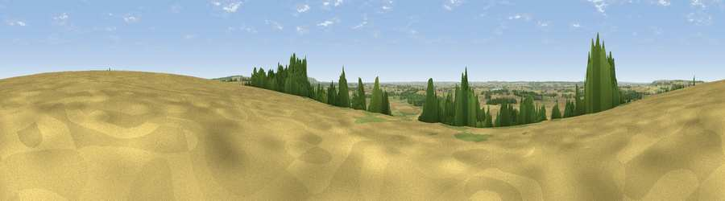

Viewpoint near Bigby
#31074 in England · top 54% of its area beats it · near BigbyWhere it is
The exact computed spot (TA 06375 06775). Click the marker for map links.
The view, rendered

A 360° render of this exact spot computed from the terrain model, tree cover and land cover — summer colours, afternoon light, calibrated against photographs of famous viewpoints. Real trees, hedges and buildings will differ in detail.
The panorama
Grey silhouette: terrain skyline in each direction (720 bearings, Earth curvature and refraction included). Dashed green: skyline with trees (+15 m) and buildings (+8 m) as obstacles. Blue strip: how far the ground is visible on each bearing.
Where the view opens
Wedge length = distance to the farthest visible ground on that bearing (vegetation-aware). Rings at 10, 25 and 50 km.
What fills the view
63% cropland · 24% grassland · 11% woodland ·
Angular shares of the visible panorama (visual magnitude), not map area. Landscape diversity 0.41 (0–1 Shannon).
Key numbers
More beautiful places nearby
The staircase of upgrades: each row has a higher view potential than everything closer. Driving times are estimates from straight-line distance, calibrated against real road routing — check an actual route before setting out.
| Place | Direction | Drive | Score |
|---|---|---|---|
| Viewpoint near Bigby | NE · 1 km | ~2 min | 51.8 |
| Fonaby Top | ESE · 7 km | ~15 min | 60.7 |
| Viewpoint near Nettleton | SSE · 8 km | ~17 min | 64.7 |
| Viewpoint near Claxby | SSE · 11 km | ~21 min | 70.5 |
| Viewpoint near Claxby | SSE · 12 km | ~23 min | 71.5 |
| Garrowby Hill (A166 crest) | NNW · 56 km | ~78 min | 71.9 |
| Viewpoint near Acklam | NNW · 60 km | ~82 min | 73.8 |
| Beacon Hill | N · 68 km | ~92 min | 79.1 |
53.54685, -0.39602 · source: screening · position refined by local search. Computed location — check access rights before visiting.